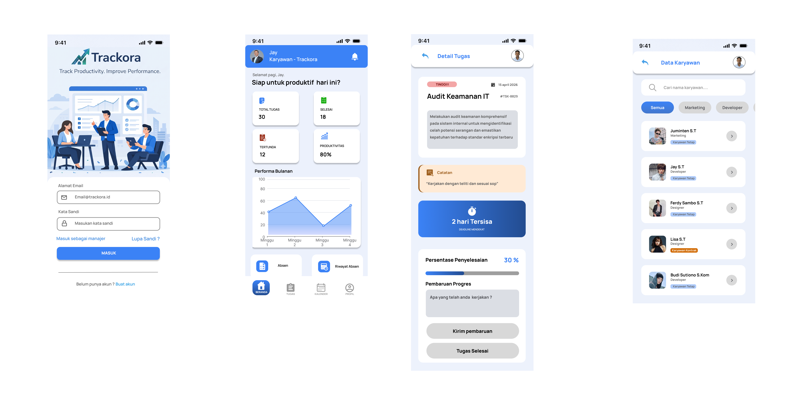
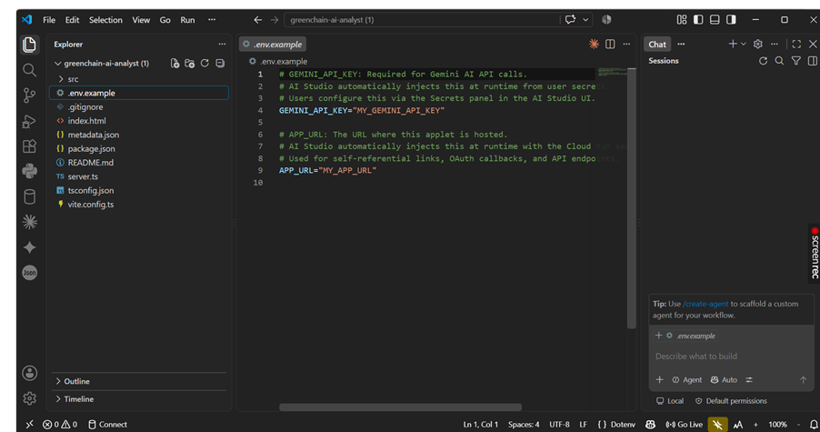

Daftar Kegiatan & Proyek Portofolio
|
 |
Trackora — Productivity & Attendance System Pengembangan konsep antarmuka UI/UX dan rancangan sistem manajemen kehadiran dan produktivitas terpadu dengan pendekatan Design Thinking serta prototyping modern. |
|
 |
GreenChain AI Analyst Eksplorasi pembuatan aplikasi analitik berbasis AI untuk mendukung rantai pasok berkelanjutan di sektor pertanian, termasuk pengolahan data dan visualisasi hasil analisis. |